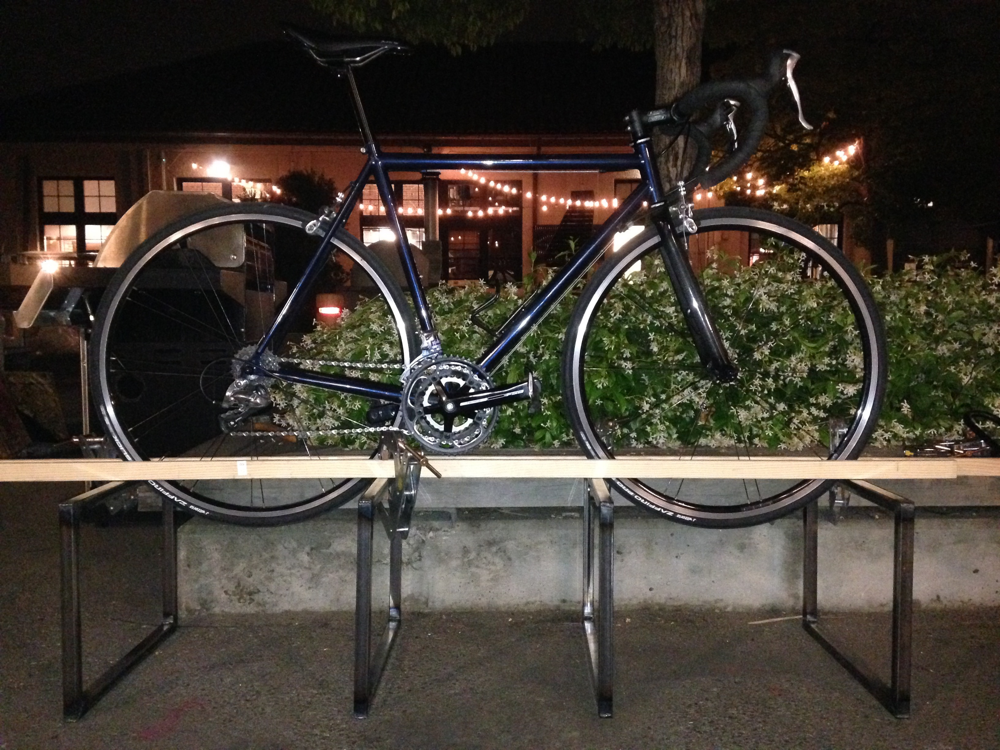
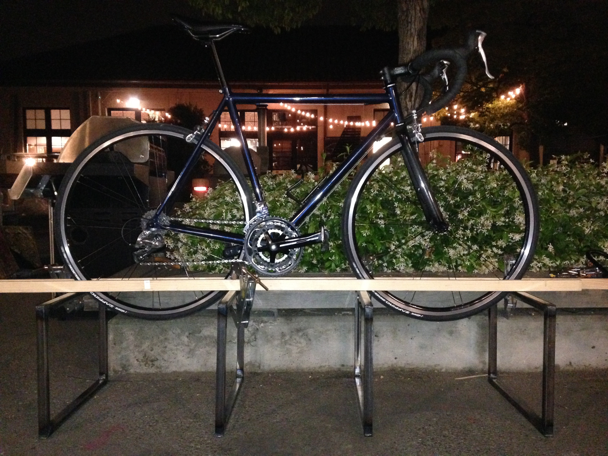
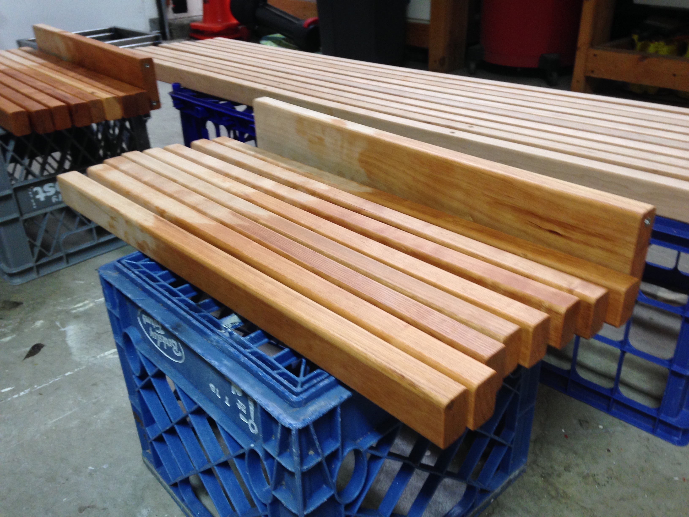
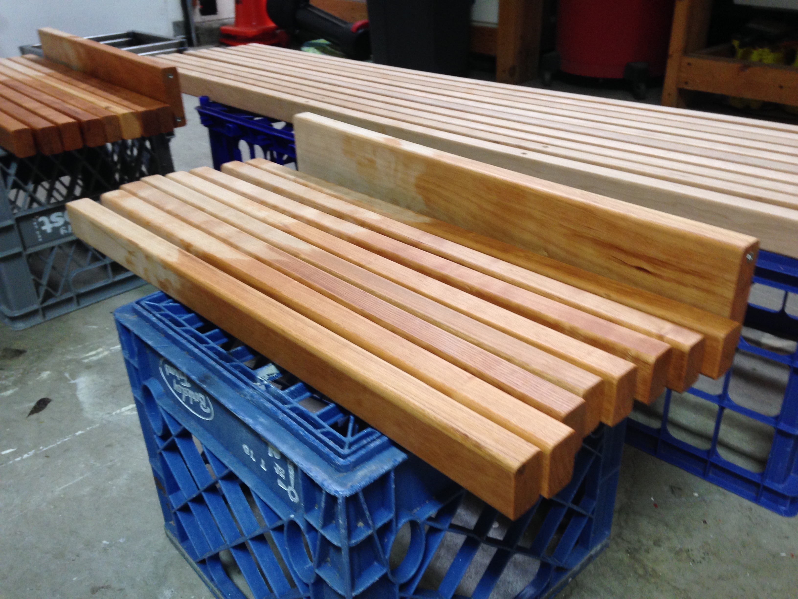

Bike Bench
Spring 2015 · Stanford, CA
In my studies at Stanford, I took ME 203: Design and Manufacturing, which is a rite of passage for mechanical engineering and product design students. The class throws you headfirst into Stanford's Product Realization Lab, where you manufacture a product of your own design using machining, sand casting, or welding.
Designing and Prototyping
Going into the class, I had a few ideas as to what I wanted to build—I wanted to gain experience with TIG welding as my main process, and with a budding passion for all things cycling-related, I figured I would design and manufacture a product for my bike. The possibilities were endless, though active brake lights, integrated headlights, and bike stands quickly came to mind.
Over time, my focused in on bike storage. With apartment living in my future, and welding being the perfect process for something structural, I sought inspiration to build myself my own pedestal to display and store my bike. I prototyped various features and designs in my dorm room, thinking about size, shelving, and possibly even lighting.

As I further designed my pedestal, constraint upon constraint popped up. How was I going to hold a bike upright in a manner that was structurally sound? How might the product be transported and built? And how was I going to afford the materials, including such a large hardwood base?
In continuing to search for answers, I was inspired by the George Nelson bench. Instead of making a short pedestal, I could make a bench at sitting height, and incorporate the use of wooden slats as opposed to a single, wide piece of hardwood. Slats would be easier to source and produce, and they also gave a means of holding my bike upright with the spaces in between. Additionally, using slats made the product easily assembled and torn down.
 

Manufacturing
Having finalized my design, I went to the shop and began making the bench. The first few weeks were spent learning how to weld so I could cut steel tubing and form the rectangular legs of the bench. After a significant amount of grinding and drilling, the legs were ready for a powder coat. The last week of manufacturing was dedicated to cutting, planing, routing, and finishing the cherry slats that would hold the bench and the bike together.


 
